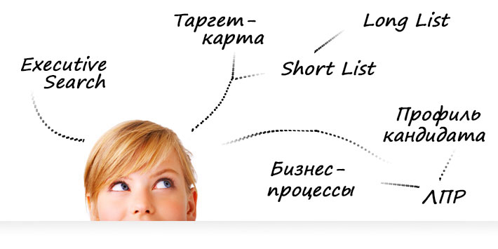

- - Правила и рынок труда изменились!
- - Битва за таланты и кадры стала жестче,
а конкуренты хитрее! - - Наступает время агрессивного рекрутинга!
Чтобы быть лучшим,
нужно быть в числе первых!
Есть вопросы? Звоните!
+7 (495) 410-72-00
26 и 27 сентября 2015 г.
Все секреты
EXECUTIVE SEARCH & HEADHUNTING
4-х модульный курс
о новейших стратегиях и методах подбора персонала
А ТЫ ХОЧЕШЬ БЫТЬ ПРОФИ В ОХОТЕ НА ЛУЧШИЕ КАДРЫ?
ЗАПИСАТЬСЯ НА ТРЕНИНГСтарые методы и инструменты подбора персонала
уже не работают!
Чтобы быть лучшим,
нужно быть в числе первых!
А ТЫ Хочешь быть в числе победителей?
Для кого:
КАК ПОЯВИЛСЯ НАШ УНИКАЛЬНЫЙ ТРЕНИНГ-ИНТЕНСИВ?
Сейчас у Вас есть возможность
записаться и пройти наш
тренинг-интенсив
Что Вы получите в результате:
Программа тренинг-интенсива
1 теоретический блок + 4 практических модуля (по этапам)
Теоретический блок
1 модуль (этап) – Снятие заявки
2 модуль (этап) – Выбор стратегии поиска
3 модуль (этап) – Отбор кандидатов
4 модуль (этап) – Выход кандидата на работу
Кто ведет тренинг-интенсив?
Анастасия Желудкова
Стоимость участия
18 000 руб.
10 000 руб.
Количество участников ограничено
отзывы участников о тренинг-ИНТЕНСИВЕ
Надежда Баулина,
Руководитель HR-проектов «AGF-Group», г. Москва
Юлия Лосева, Hr-менеджер "Флорист.ру", г. Москва
Выражаю благодарность Анастасии за проведенный тренинг. У меня небольшой опыт в подборе персонала, поэтому хотела получить новые теоретические систематизированные знания и практические приемы для закрытия вакансий. Понравился подход тренинга с возможностью применить и попробовать методы сразу в работе. Была очень комфортная и позитивная обстановка. Большое спасибо.Позвоните и запишитесь на Тренинг-интенсив уже сейчас
+7 (495) 410-72-00
© 2013 - 2015 «Тренинг-интенсив: Все секреты Executive Search & Headhunting»
Политика конфеденциальности